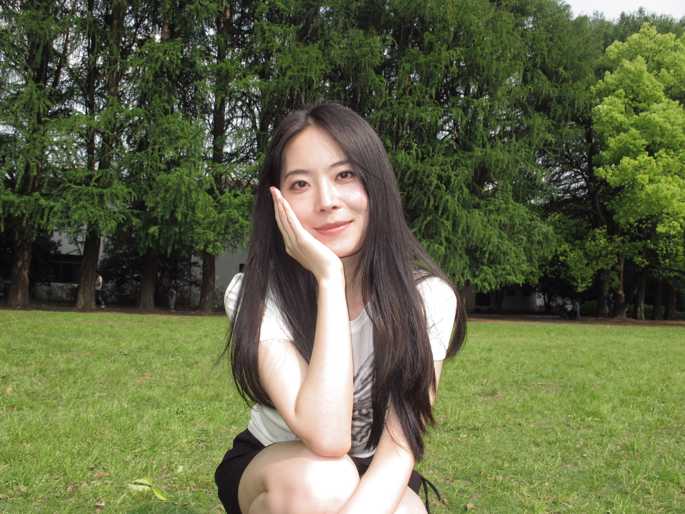
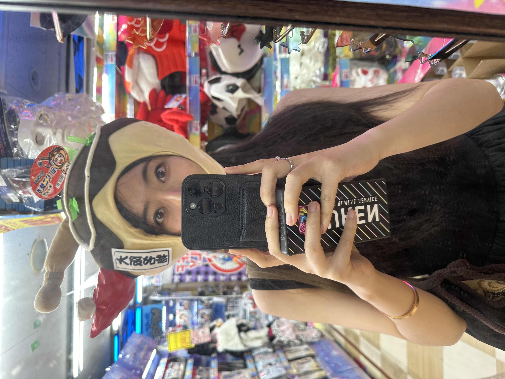
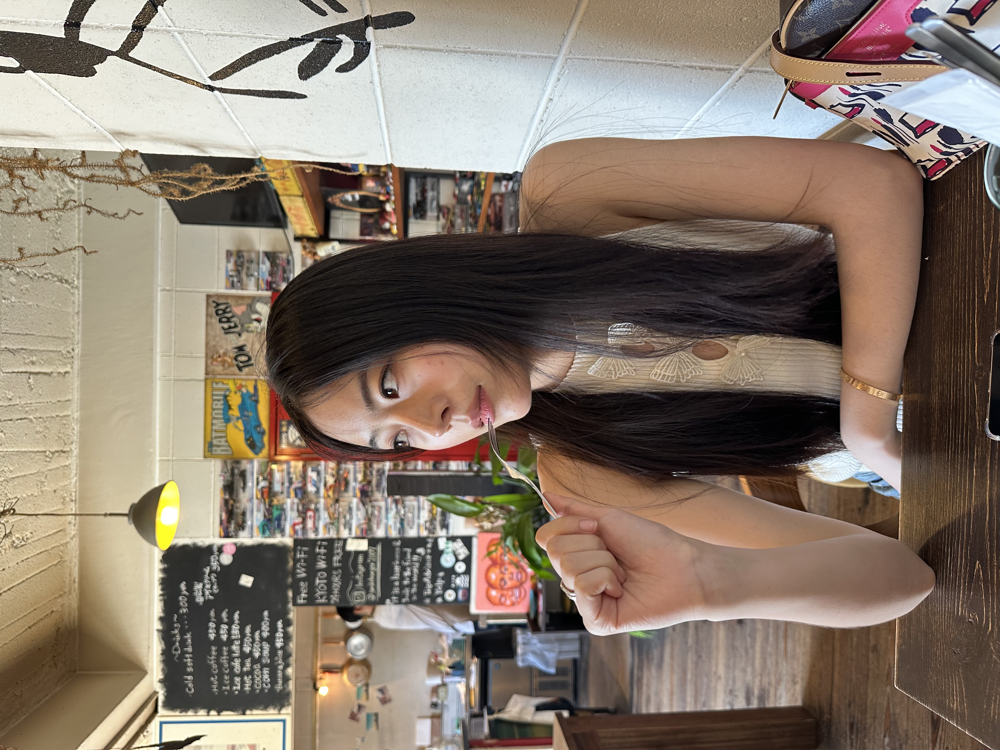
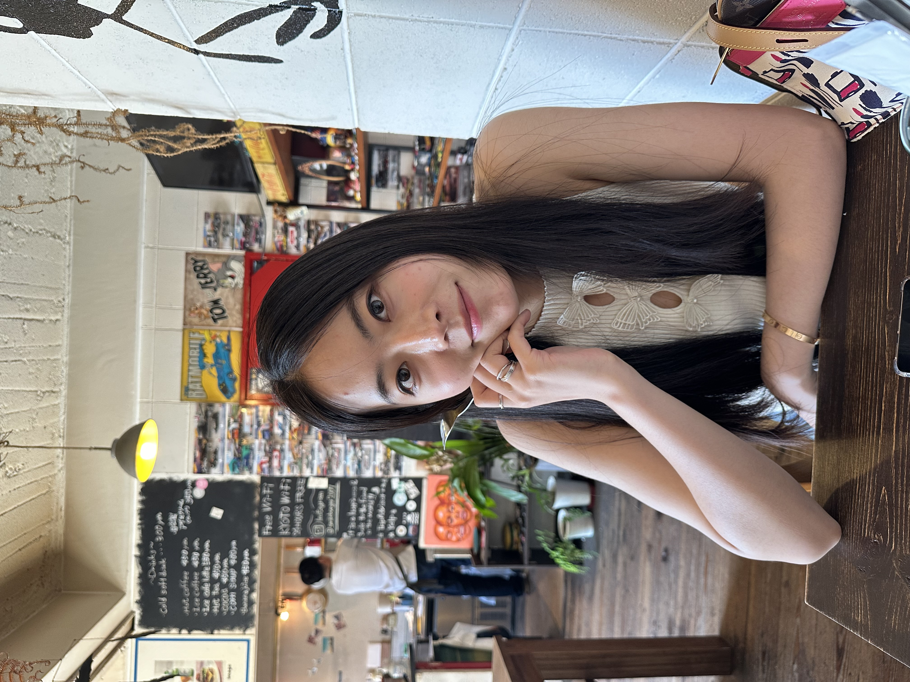
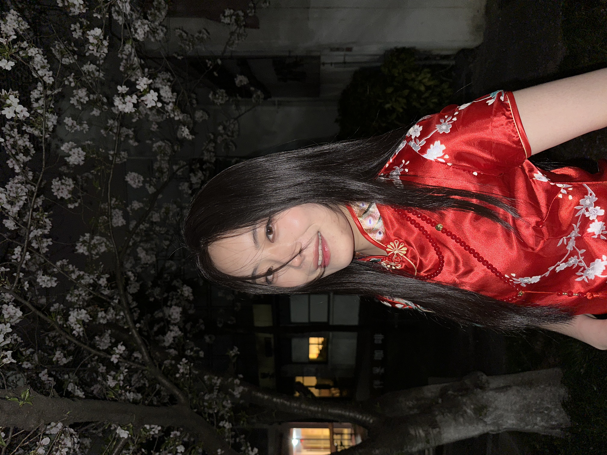
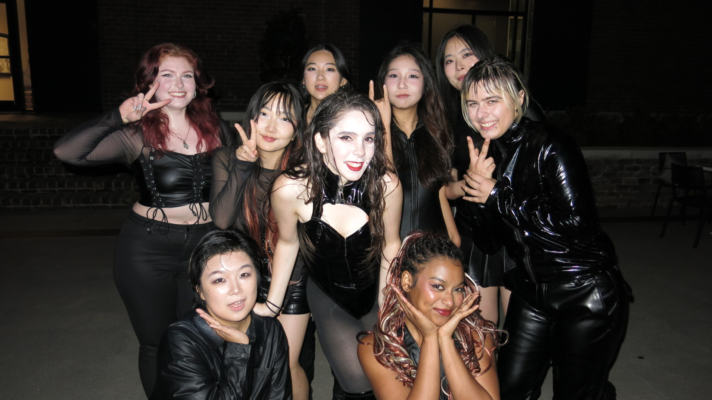

Hi, I’m Yuwang.
A multi-disciplinary designer who cares deeply about clarity, quality and collaboration.
I used to work as an interior designer before shifting to digital experience design. My love for creativity drives me to solve complex problems and create meaningful, intuitive experiences. I am currently a Master’s student in UX Design at SCAD.
Fun facts about me: I’m a twin 👯♀️, I love cat memes and anything cute 🐱.


